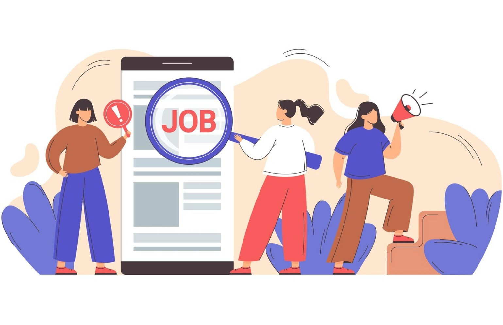

Phase 3: Apply for Jobs
Job applications are the practical step toward realizing your career goals. By actively seeking and applying for jobs that align with your skills and interests, you significantly improve your chances of securing a fulfilling and rewarding career.
Job Search Strategies
-
Leverage Online Job Boards:
Use platforms like LinkedIn, Indeed, and Glassdoor to discover job openings that match your profile.
-
Directly Visit Company Websites:
Regularly check the careers pages of companies you admire and apply directly.
-
Network Strategically:
Build relationships with professionals in your field to learn about job opportunities and gain referrals.
-
Attend Industry Events:
Participate in job fairs, hackathons, and career expos to connect with recruiters and hiring managers.

How to Apply Effectively
-
Tailor Your Resume and Cover Letter:
- Customize your documents for each job by highlighting the most relevant skills and accomplishments.
- Use strong action verbs and quantify your achievements to stand out.
- Write a compelling cover letter that clearly shows your interest in the role and how you meet the requirements.
-
Thorough Research:
- Study the company's mission, culture, and recent updates.
- Understand the job description and key responsibilities.
- Identify the specific skills and experiences the company is looking for.
-
Effective Online Presence:
- Maintain a professional LinkedIn profile with updated achievements and projects.
- Use industry-relevant keywords to improve visibility in recruiter searches.
- Engage with posts, connect with peers, and participate in discussions.
-
Follow-Up:
- Send a thank-you email after interviews to express appreciation and reiterate interest.
- Politely follow up with the recruiter if you have not heard back within the expected time frame.

Additional Tips
-
Practice Interview Questions:
Familiarize yourself with common technical and HR questions.
-
Conduct Mock Interviews:
Practice with friends or mentors to improve confidence and performance.
-
Stay Positive and Persistent:
Rejections are part of the journey—keep applying and improving.
-
Continuous Learning:
Keep upgrading your skills with certifications, courses, or side projects.
By following these strategies and remaining proactive and resilient, you will significantly boost your chances of landing your dream job.